China Employee Termination in 2026: Pulse Priority-Radar Brief for Foreign Employers
Key takeaways
- Use a priority-radar model to focus foreign leadership attention on the highest-risk controls first.
- Inner-ring priorities in China termination remain route legality, evidence integrity, and payroll alignment.
- Lead with legal context, then convert to practical action priority by ring.
Plain-language legal context first
China is not at-will. Employer-initiated termination generally requires a lawful statutory basis and coherent process evidence under the Labor Contract Law framework. Core anchors: Labor Contract Law, Decree No. 535 implementation rules, and SPC labor-dispute interpretation.
Pulse priority radar
Inner ring (act now)
- Route rationale inconsistency
- Evidence chronology contradictions
- Settlement/payroll/tax mapping mismatch
Rule: Any inner-ring breach = immediate no-go.
Middle ring (active control)
- Manager script drift
- City-level validation pending
Rule: Escalate to inner ring near employee-facing milestones or payroll lock.
Outer ring (closeout assurance)
- Closure evidence packet completion
- Archive integrity checks
Rule: Case closure blocked until outer-ring completion passes.
Why this helps foreign employers
Priority radar gives global teams a fast briefing signal: what needs action now versus active monitoring versus closeout assurance. It supports clear escalation across time zones.
What improved vs previous run
Compared with traffic-control framing, this run improves executive prioritization by ranking controls in concentric urgency rings rather than only stop/slow/go states.
Minimum documentation controls
- Canonical route memo
- Versioned chronology log
- Script acknowledgment record
- Settlement mapping sheet
- Payroll/tax reconciliation sheet
- City-level validation memo
- Closure evidence packet
Legal depth appendix (secondary)
Grounded in Labor Contract Law, Decree No. 535, and SPC interpretation, with practical context from China Briefing, Littler, ICLG, and PwC.
Disclaimer
Informational only; not legal/tax/employment advice.
Sources
- http://www.npc.gov.cn/zgrdw/englishnpc/Law/2007-12/13/content_1384064.htm
- https://www.gov.cn/gongbao/content/2008/content_1124615.htm
- https://www.court.gov.cn/fabu/xiangqing/243981.html
- https://www.china-briefing.com/news/employee-termination-in-china/
- https://www.littler.com/news-analysis/asap/key-recent-developments-chinas-employment-law-china-us-comparative-perspective
- https://taxsummaries.pwc.com/peoples-republic-of-china/individual/taxes-on-personal-income
- https://iclg.com/practice-areas/employment-and-labour-laws-and-regulations/china
Need local employment support in China?
If you need a compliance-first partner for hiring, payroll, and risk controls in China, China-Payroll.com can help evaluate the right setup.
Image Prompt Pack
Create a 16:9 hero image for article title: 'China Employee Termination in 2026: Pulse Priority-Radar Brief for Foreign Employers'. Scene: global operations team evaluating workforce model options for China market entry. Include motifs: decision matrix, org ch…